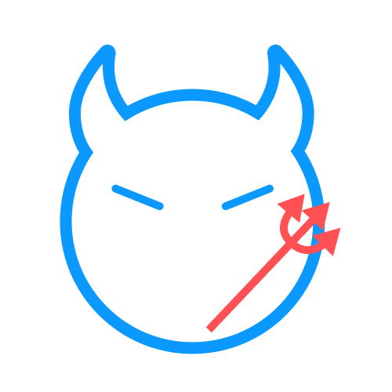
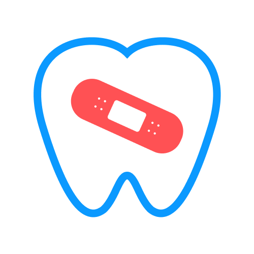
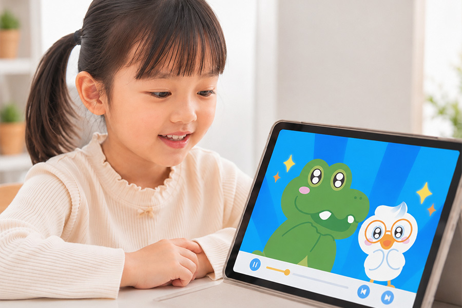

양치 시간을 지루해해요
설명은 반복되지만 아이의 집중은 금방 흐트러집니다.
올바른 구강 관리를 위한 아동 교육 프로젝트
기존의 설명 중심 교육만으로는 실제 행동 연결까지 어려운 경우가 많습니다
아이가 직접 보고, 이해하고, 참여하며 배울 수 있는 새로운 양치 교육 방식을 제안합니다
설명은 반복되지만 아이의 집중은 금방 흐트러집니다.
앞니만 닦거나 칫솔을 물고 있는 경우가 많습니다.
보호자의 반복 설명 부담이 커집니다.
시청 후 실제 행동으로 연결되는 과정이 부족합니다.
어느 부위를 얼마나 닦아야 하는지 이해가 어렵습니다.
설명은 반복되지만 아이의 집중은 금방 흐트러집니다.
앞니만 닦거나 칫솔을 물고 있는 경우가 많습니다.
보호자의 반복 설명 부담이 커집니다.
시청 후 실제 행동으로 연결되는 과정이 부족합니다.
어느 부위를 얼마나 닦아야 하는지 이해가 어렵습니다.
유치는 잠시 쓰는 치아가 아닌 영구치와 구강 발달에 영향을 주는 첫 치아입니다

유아기에는 간식 섭취가 잦고 스스로 꼼꼼히 닦기 어려워 충치 위험이 높습니다

유치 관리가 부족하면 이후 영구치 배열과 구강 건강에도 영향을 줄 수 있습니다
어릴 때 형성되지 않은 양치 루틴은 성장 후에도 꾸준한 관리로 이어지기 어렵습니다
아푸치카는 양치를 처음 배우는 아이를 위해 애니메이션, 교구, AR 가이드를
하나의 흐름으로
연결한 아동 구강관리 교육 프로젝트입니다
아푸치카는 아이가 양치를 단순히 보는 데서 그치지 않고,
이야기와 교구, AR 가이드를 통해 직접 따라 할 수 있도록 설계했습니다.
